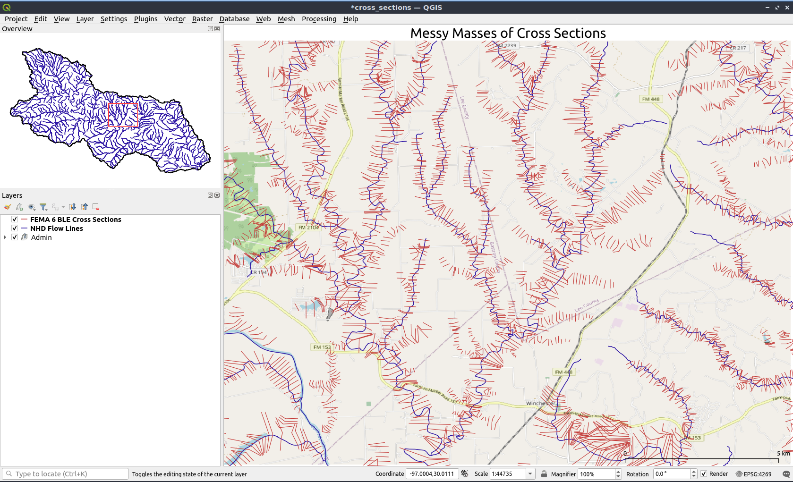
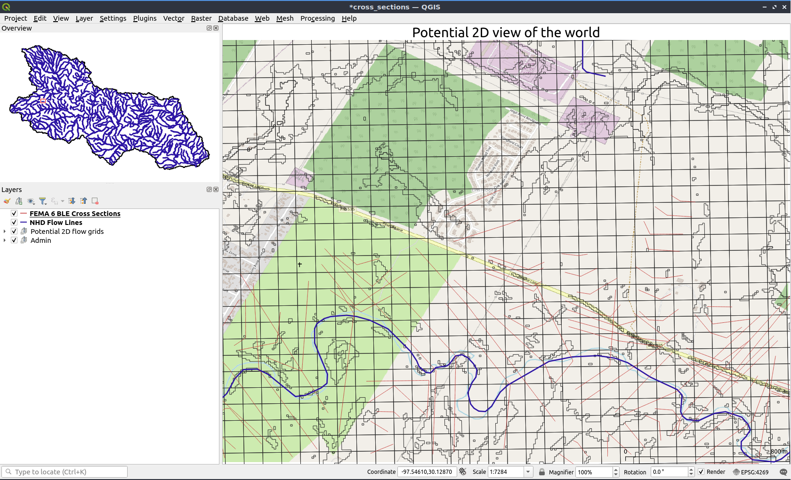
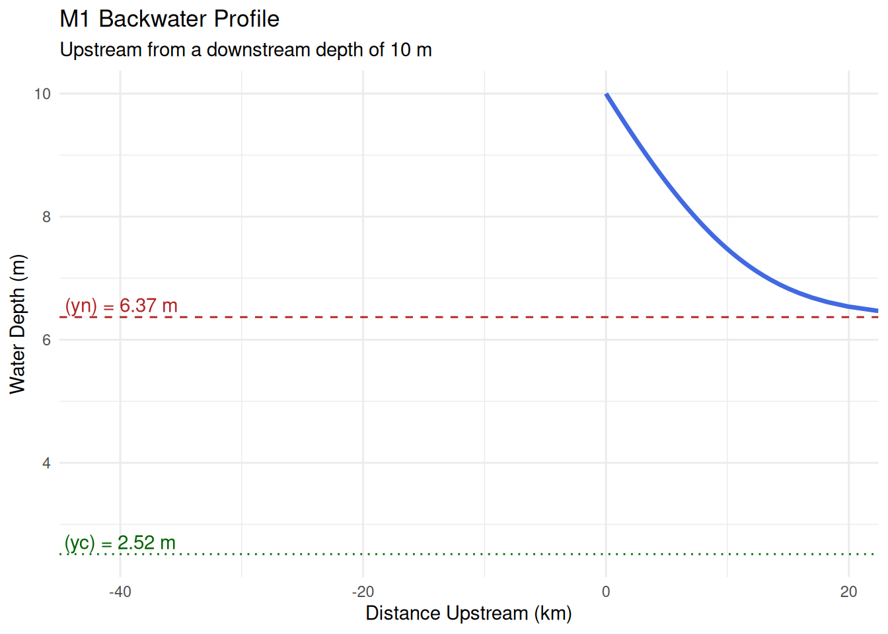

All models are wrong but some are useful -George Box (Box 1976)
The study of modeling the flow of water over a surface is hydraulics. That particular topic (fluid dynamics), is a complex one that probes deep gaps in our collective knowledge of physical laws governing reality. the scale needed to represent the system to a degree of accuracy required, and the friction we experience as we carry assumptions and simplifications from conception to realization. As we make assumptions about the nature of nature, we can reasonably make simplifications to our system. In fluid sciences, one of the most powerful ones we can make is the inclusion or execution of particular forces, as the series of kinematic, diffusive, and dynamic wave model equations might exemplify, or in the reduction of the problems spatial dimensionality, as would be demonstrated by modeling the same domain using three-dimensional computational fluid dynamics solvers like TELEMAC-3D and one-dimensional hydraulic solvers like HEC-RAS 1D. These simplifications, sometimes referred to as “low complexity” models, are nearly universally favored over more the more complex representations of the world due to their conceptual and computational efficiency. While these low dimensional models have their uses, the real world is not as rigid and some knowledge is intrinsically lost in the simplification. This phenomenon is particularly present in the field of river hydraulics and open channel flow which was, and in may ways still is, dominated by one-dimensional models and measurement techniques. One of the assumptions made in these one-dimensional models is that all flow passes perpendicular through a given transect (cross section of a river). These 1-dimensional models have been used since the inception of computational fluid flow and have been widely adopted across public, private, and academic sectors. As an example, virtually all FEMA 100-year flood inundation maps are created using HEC-RAS 1D flow solver, a publicly available 1-dimensional flow solver from the U.S. Army Corp of Engineers.
Although these 1-dimensional models have seen widespread acceptance and are used in scientific, engineering design, and operational capacities, they require extensive knowledge and judicious use of modeler discretion in order to provide serviceable results. It is also not uncommon to find that model results that may be realistic in one transect, may be off by several feet in another. Post-event analysis of such failures universally point to mis-parameterization of the model or a violation of the models assumptions. Additionally, this type of modeling, while widely applicable to a single reach, is wholly unsuited to widespread applications in flooding. As seen in Figure 1, when the application in question requires the inclusion of more than one reach, the workflow and system that is needed to appropriately addresses the complexities of that merger grows exponentially.

Given that and the state of advancement computers continue to experience, it seems rather a rather aimless exercise to devise and execute a convoluted series of steps to couple model. At that level of complexity, is it not simply better to increase the dimensionality of the problem and present a clearer path towards explainability, potential gains in accuracy, at the “cost” of computation time?

We’ll restrict ourselves here to just models intended to solve open channel and shallow water equations although the principals obviously have analogies and similarities to other fields. By and large, models require 3 classes of data in order to have all of the information needed to run. They need a modeling surface defining the shape of the terrain we’re modeling, and then some way to perturb the system, typically represented as an up and downstream boundary condition. Most represent these as either a flux of mass (a discharge) or a flux of energy (a stage), and can either be steady state or not. ::: {.content-hidden}
Flow Classification
Flow in an open channel is primarily classified by how flow depth (\(y\)) changes over space and time. For flood modeling, we are most often concerned with steady flow, where conditions at a point do not change over time (\(\\frac{\\partial y}{\\partial t} = 0\)).
Steady flow is further divided into:
Uniform Flow: Flow depth and velocity are constant along the channel length (\(\\frac{\\partial y}{\\partial x} = 0\)). This occurs in long, straight, prismatic channels where the gravitational force is balanced by frictional resistance. It’s often used to define boundary conditions in models. The normal depth (\(y\_n\)) is the depth at which uniform flow occurs.
Varied Flow: Flow depth changes along the channel length (\(\\frac{\\partial y}{\\partial x} \\neq 0\)).
Gradually Varied Flow (GVF): Depth changes slowly over a long distance. This is the most common flow type in natural rivers and is the basis for calculating water surface profiles.
Rapidly Varied Flow (RVF): Depth changes abruptly over a short distance, such as at a hydraulic jump, weir, or bridge pier.
Energy and Flow State
The state of flow is characterized by the Froude Number (\(Fr\)), the ratio of inertial to gravitational forces:
\[Fr = \frac{V}{\sqrt{gD}}\]
where \(V\) is the mean velocity, \(g\) is gravitational acceleration, and \(D\) is the hydraulic depth (\(A/T\), where \(A\) is the cross-sectional area and \(T\) is the top width).
\(Fr \< 1\): Subcritical Flow. Flow is deep and slow. Disturbances can travel upstream. This is typical for large, low-gradient rivers.
\(Fr = 1\): Critical Flow. The state of minimum specific energy for a given discharge. The depth at which this occurs is the critical depth (\(y\_c\)).
\(Fr \> 1\): Supercritical Flow. Flow is shallow and fast. Disturbances cannot propagate upstream. This is found in steep channels or downstream of sluice gates.
The specific energy (\(E\)) is the energy per unit weight of water relative to the channel bed:
\[E = y + \frac{V^2}{2g}\]
For a given discharge, there are two possible depths (subcritical and supercritical) that have the same specific energy, except at the point of critical flow where energy is minimal.
Governing Equations
The one-dimensional steady GVF equation describes the change in water depth with respect to channel position (\(x\)):
\[\frac{dy}{dx} = \frac{S_0 - S_f}{1 - Fr^2}\]
Here, \(S\_0\) is the channel bed slope and \(S\_f\) is the friction slope, which is the energy loss due to friction. In a numerical model, \(S\_f\) is typically calculated using Manning’s equation:
\[S_f = \left( \frac{nQ}{k A R_h^{2/3}} \right)^2\]
where \(Q\) is the discharge, \(n\) is Manning’s roughness coefficient, \(A\) is the cross-sectional area, \(R\_h\) is the hydraulic radius (\(A/P\), with \(P\) being the wetted perimeter), and \(k\) is a unit conversion factor (1.0 for SI, 1.49 for US customary).
Flow Classification
Flow in an open channel is primarily classified by how flow depth (\(y\)) changes over space and time. For flood modeling, we are most often concerned with steady flow, where conditions at a point do not change over time (\(\\frac{\\partial y}{\\partial t} = 0\)).
Steady flow is further divided into:
Uniform Flow: Flow depth and velocity are constant along the channel length (\(\\frac{\\partial y}{\\partial x} = 0\)). This occurs in long, straight, prismatic channels where the gravitational force is balanced by frictional resistance. It’s often used to define boundary conditions in models. The normal depth (\(y\_n\)) is the depth at which uniform flow occurs.
Varied Flow: Flow depth changes along the channel length (\(\\frac{\\partial y}{\\partial x} \\neq 0\)).
Gradually Varied Flow (GVF): Depth changes slowly over a long distance. This is the most common flow type in natural rivers and is the basis for calculating water surface profiles.
Rapidly Varied Flow (RVF): Depth changes abruptly over a short distance, such as at a hydraulic jump, weir, or bridge pier.
Energy and Flow State
The state of flow is characterized by the Froude Number (\(Fr\)), the ratio of inertial to gravitational forces:
\[Fr = \frac{V}{\sqrt{gD}}\]
where \(V\) is the mean velocity, \(g\) is gravitational acceleration, and \(D\) is the hydraulic depth (\(A/T\), where \(A\) is the cross-sectional area and \(T\) is the top width).
\(Fr \< 1\): Subcritical Flow. Flow is deep and slow. Disturbances can travel upstream. This is typical for large, low-gradient rivers.
\(Fr = 1\): Critical Flow. The state of minimum specific energy for a given discharge. The depth at which this occurs is the critical depth (\(y\_c\)).
\(Fr \> 1\): Supercritical Flow. Flow is shallow and fast. Disturbances cannot propagate upstream. This is found in steep channels or downstream of sluice gates.
The specific energy (\(E\)) is the energy per unit weight of water relative to the channel bed:
\[E = y + \frac{V^2}{2g}\]
For a given discharge, there are two possible depths (subcritical and supercritical) that have the same specific energy, except at the point of critical flow where energy is minimal.
Governing Equations
The one-dimensional steady GVF equation describes the change in water depth with respect to channel position (\(x\)):
\[\frac{dy}{dx} = \frac{S_0 - S_f}{1 - Fr^2}\]
Here, \(S\_0\) is the channel bed slope and \(S\_f\) is the friction slope, which is the energy loss due to friction. In a numerical model, \(S\_f\) is typically calculated using Manning’s equation:
\[S_f = \left( \frac{nQ}{k A R_h^{2/3}} \right)^2\]
where \(Q\) is the discharge, \(n\) is Manning’s roughness coefficient, \(A\) is the cross-sectional area, \(R\_h\) is the hydraulic radius (\(A/P\), with \(P\) being the wetted perimeter), and \(k\) is a unit conversion factor (1.0 for SI, 1.49 for US customary).
Tutorials
This section provides R code for solving common hydraulic problems related to flood analysis. We’ll assume a wide rectangular channel for simplicity, where \(R\_h \\approx y\) and \(A = By\) for a channel of width \(B\).
Calculating Normal and Critical Depth
First, let’s create functions to find the critical depth (\(y\_c\)) and solve for the normal depth (\(y\_n\)) for a rectangular channel.
#--- Function to calculate critical depth for a rectangular channel ---## Q = Discharge (m^3/s)# B = Channel width (m)# g = Gravitational acceleration (m/s^2)calculate_yc <-function(Q, B, g =9.81) { q <- Q / B # Discharge per unit width yc <- (q^2/ g)^(1/3)return(yc)}#--- Function to calculate normal depth using Manning's equation ---## Solves for yn in Q = (k/n) * A * Rh^(2/3) * S0^(1/2)# For a wide rectangular channel, A = B*y and Rh = y# Q = Discharge (m^3/s), n = Manning's n, B = Width (m), S0 = Bed slopecalculate_yn <-function(Q, n, B, S0, k =1.0) {# Manning's equation rearranged for yn yn <- ((Q * n) / (k * B *sqrt(S0)))^(3/5)return(yn)}# Example calculationQ_flood <-2500# Flood discharge (m^3/s)B_river <-200# River width (m)n_main <-0.035# Manning's n for main channelS_0 <-0.0004# Bed slope (m/m)yc <-calculate_yc(Q = Q_flood, B = B_river)yn <-calculate_yn(Q = Q_flood, n = n_main, B = B_river, S0 = S_0)cat(paste0("Critical Depth (yc): ", round(yc, 2), " m\n"))
A common scenario in flood modeling is a backwater effect, or M1 profile, where a downstream obstruction (like a dam, bridge, or confluence with a larger river) forces the water depth above the normal depth. We can model this using the direct step method, which calculates the distance (\(\\Delta x\)) required for a small change in depth (\(\\Delta y\)).
The direct step equation is derived from the energy equation:
Here’s an R implementation to compute and plot an M1 profile upstream from a known downstream depth.
#--- Function to compute a backwater (M1) profile ---#compute_m1_profile <-function(Q, B, n, S0, y_start, y_end, num_steps) { g <-9.81 k <-1.0 y_steps <-seq(y_start, y_end, length.out = num_steps)# Function to calculate specific energy (E) and friction slope (Sf) calculate_hydraulics <-function(y) { A <- B * y V <- Q / A Rh <- y # Assuming wide rectangular channel E <- y + V^2/ (2* g) Sf <- (n^2* V^2) / (k^2* Rh^(4/3))return(list(E = E, Sf = Sf)) }# Direct step calculation x_coords <-numeric(num_steps) x_coords[1] <-0# Start at the downstream controlfor (i in2:num_steps) { h1 <-calculate_hydraulics(y_steps[i-1]) h2 <-calculate_hydraulics(y_steps[i]) Sf_avg <- (h1$Sf + h2$Sf) /2 delta_x <- (h2$E - h1$E) / (S0 - Sf_avg)# We are moving upstream, so x decreases. We store as positive distance from start. x_coords[i] <- x_coords[i-1] + delta_x } profile_data <-data.frame(distance_upstream = x_coords,water_depth = y_steps )return(profile_data)}#--- Model Setup ---## Downstream boundary condition: water depth is 10m# We want to model the profile until it approaches normal depth (yn)yn_val <-calculate_yn(Q = Q_flood, n = n_main, B = B_river, S0 = S_0)m1_profile <-compute_m1_profile(Q = Q_flood, B = B_river, n = n_main, S0 = S_0, y_start =10.0, y_end = yn_val +0.1, num_steps =50)#--- Plotting the Profile ---#ggplot2::ggplot(m1_profile, ggplot2::aes(x =-distance_upstream /1000, y = water_depth)) + ggplot2::geom_line(color ="royalblue", linewidth =1.2) + ggplot2::geom_hline(yintercept = yn_val, linetype ="dashed", color ="firebrick") + ggplot2::geom_hline(yintercept = yc, linetype ="dotted", color ="darkgreen") + ggplot2::annotate("text", x =-45, y = yn_val +0.2, label =paste("Normal Depth (yn) =", round(yn_val, 2), "m"), color ="firebrick") + ggplot2::annotate("text", x =-45, y = yc +0.2, label =paste("Critical Depth (yc) =", round(yc, 2), "m"), color ="darkgreen") + ggplot2::labs(title ="M1 Backwater Profile",subtitle =paste("Upstream from a downstream depth of", 10.0, "m"),x ="Distance Upstream (km)",y ="Water Depth (m)" ) + ggplot2::theme_minimal() + ggplot2::scale_x_continuous(expand =c(0, 0))

This plot visualizes the M1 curve, showing how the water surface elevation gradually decreases upstream until it asymptotically approaches the normal depth.
Visualizing Flood Inundation
Flood mapping involves translating the calculated water surface elevation (WSE) onto a topographic surface. The WSE at any point is the channel bed elevation plus the flow depth (\(WSE = z\_{bed} + y\)).
Here is a conceptual example using R to visualize inundation on a simplified V-shaped valley cross-section.
```{r}#--- Create a simple valley cross-section ---## x_cs = distance from channel centerlinex_cs <- seq(-500, 500, length.out = 400)# z_bed = elevation of the ground# Simple V-shape with a flat river bottombed_elevation <- pmin(0.01 * abs(x_cs - B_river/2), 0.01 * abs(x_cs + B_river/2))bed_elevation[abs(x_cs) <= B_river/2] <- 0cs_data <- data.frame(x = x_cs, z = bed_elevation)#--- Calculate WSE from the M1 profile at a specific location ---## Let's check the WSE 20km upstream (distance_upstream = 20000)# We assume the channel bed elevation at this point is 100mchannel_bed_elev <- 100 water_depth_20km <- m1_profile %>% dplyr::filter(distance_upstream >= 20000) %>% dplyr::slice(1) %>% dplyr::pull(water_depth)wse <- channel_bed_elev + water_depth_20km#--- Plot the inundated cross-section ---#ggplot2::ggplot(cs_data, ggplot2::aes(x = x, y = z)) + ggplot2::geom_area(data = cs_data %>% dplyr::filter(z <= wse), ggplot2::aes(y = z), fill = "lightblue", alpha = 0.7) #+ # ggplot2::geom_line(ggplot2::aes(y = z), color = "saddlebrown", linewidth = 1.5) + # ggplot2::geom_hline(yintercept = wse, color = "blue", linetype = "solid", linewidth = 1) + # ggplot2::annotate("text", x = 0, y = wse + 1, label = paste("WSE =", round(wse, 2), "m"), color = "blue") + # ggplot2::annotate("segment", x = -250, xend = 250, y = wse, yend = wse, # arrow = ggplot2::arrow(type = "closed", length = unit(0.1, "inches"), ends = "both"), color = "blue") + # ggplot2::annotate("text", x = 0, y = wse - 1.5, label = paste("Flood Inundation Width:", round(2 * max(cs_data$x[cs_data$z <= wse]), 1), "m"), color = "black") + # ggplot2::labs( # title = "Conceptual Flood Inundation Map (Cross-Section View)", # subtitle = paste("At 20 km upstream, for Q =", Q_flood, "m³/s"), # x = "Distance from Channel Centerline (m)", # y = "Elevation (m)" # ) + # ggplot2::theme_classic() + # ggplot2::coord_cartesian(ylim = c(0, wse + 2))```
This plot shows how a calculated WSE can be draped over a terrain model. Areas where the ground elevation is below the WSE are inundated. Repeating this process at many cross-sections along a river produces a 2D flood inundation map.
Reference
A quick summary of key formulas for steady, one-dimensional open channel flow.
::: ## Modeling ::: {.content-hidden} In my grand diagram of modeling. ::: ## Routing ::: {.content-hidden} https://download.comet.ucar.edu/memory-stick/hydro/basic_int/routing/navmenu.php.htm https://ponce.sdsu.edu/muskingum_cunge_method_explained.html#:~:text=1.,parameters%20(Cunge%2C%201969). ::: ## Rating curves ::: {.content-hidden} Rating curves are by far and away the most common way we encounter this concept across hydraulics. By using something easy to measure (the distance from the instrument to the water surface) and by collecting discharge and elevation measurements of the system at different ranges, we can construct a relationship between the “stage” of the water and the predicted volume flux. I’ll call this process the real rating. We can calculate a rating curve for an arbitrary cross section by taking know boundary conditions on the up and downstream ends of our area of interest and running a sequence of hydraulic models over that
Rating Curve methods - RAS run - cross section - Geometrically derived - HAND catchment - Computed - cross sections at a spot - Computed - cross sections for a reach
Group to cell, run through ahg, round to sigfigs and group on paired values ::: ## Hydralics, differentiability, and the Millennium prize for proving Navier–Stokes existence and smoothness ::: {.content-hidden} https://www.youtube.com/watch?v=Ra7aQlenTb8&ab_channel=vcubingx [[20241014231222]] Defining differentiability :::
Other Resources
College level earth science review from COMET MetEd: https://www.meted.ucar.edu/education_training?query=&page=1
NEON training and educational resources: https://www.neonscience.org/resources